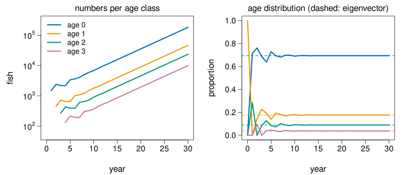
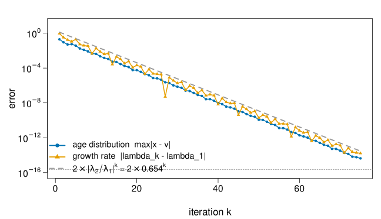
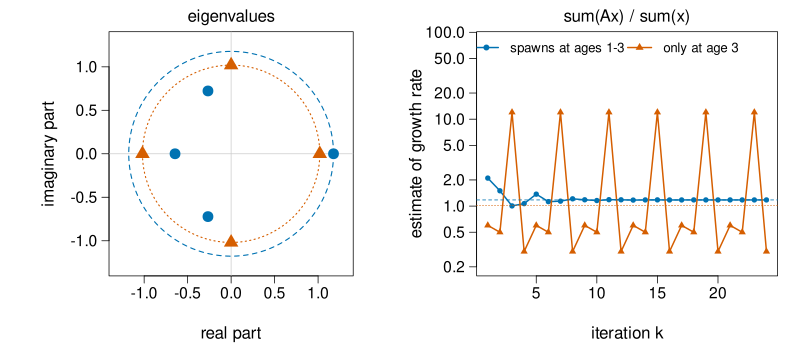
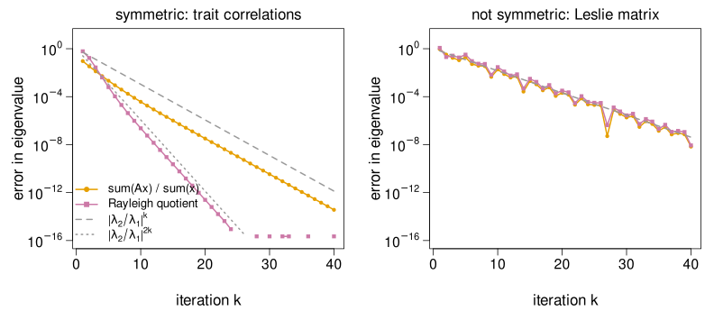

A population model that is run forward year after year computes, without being asked, the dominant eigenvalue and eigenvector of its matrix. This lecture turns that observation into an algorithm and asks when it works.
Power iteration: multiply by A again and again, and normalise. The direction settles on the dominant eigenvector, the scale factor on the dominant eigenvalue.
Convergence rate|\lambda_2/\lambda_1|: linear convergence, fast or hopelessly slow depending on the second eigenvalue. It fails when |\lambda_2| = |\lambda_1|.
Rayleigh quotient: a better eigenvalue estimate from the same vector (twice the digits for symmetric matrices).
Inverse iteration and shifts: iterate with (A - \sigma I)^{-1} to find the eigenvalue nearest\sigma, in a few steps.
Biology: a Leslie matrix (long-term growth rate and stable age distribution of a fish population) and the stationary distribution of a Markov chain of cell states.
A biology problem: a stocked lake
A lake is stocked with 1000 one-year-old fish. Each year, fish of age i survive to age i+1 with probability s_i, and produce F_i offspring that are counted next year as age 0.

After a few wobbly years every age class grows by the same factor, about 1.177 per year.
The proportions in the age classes settle at 69 %, 18 %, 9 %, 4 %, whatever the starting stock.
What are these two numbers, how fast are they reached, and when are they not reached at all?
The Leslie matrix
Write the numbers in age classes 0–3 as a vector \mathbf n_t. One year later, \mathbf n_{t+1} = L\,\mathbf n_t:
L = \begin{pmatrix} 0 & 1.5 & 4 & 5 \\ 0.3 & 0 & 0 & 0 \\ 0 & 0.6 & 0 & 0 \\ 0 & 0 & 0.5 & 0 \end{pmatrix}
\quad \begin{array}{l} \leftarrow \text{offspring } F_i \text{ per fish of age } i \\ \leftarrow \text{survival } s_0 \\ \leftarrow s_1 \\ \leftarrow s_2 \end{array}
L <-matrix(0, 4, 4)L[1, ] <-c(0, 1.5, 4, 5) # offspring per fish of each ageL[cbind(2:4, 1:3)] <-c(0.3, 0.6, 0.5) # survival to the next agen <-c(0, 1000, 0, 0) # stock 1000 one-year-oldsfor (t in1:30) n <- L %*% nround(drop(n))# [1] 180810 46072 23479 9971sum(L %*% n) /sum(n) # growth of the total in year 31# [1] 1.177361
Recap: eigenvalues of a 2 × 2
A two-age-class plant: L = \begin{pmatrix} 1 & 1 \\ 0.75 & 0 \end{pmatrix}. An eigenvector\mathbf v \ne \mathbf 0 satisfies L\mathbf v = \lambda\mathbf v; the eigenvalues solve \det(L - \lambda I) = 0:
Biology: the population grows by 1.5 per year in the long run, with juveniles : adults = 2 : 1 (67 % juveniles).
Any multiple of \mathbf v is also an eigenvector: we choose the scaling (here, proportions summing to 1).
Why repeated multiplication finds \lambda_1
Write the start as a combination of eigenvectors: \mathbf x_0 = (1, 0) = \tfrac38(2, 1) + \tfrac18(2, -3). Each multiplication by L multiplies each part by its own eigenvalue:
The \mathbf v_2 part shrinks relative to the \mathbf v_1 part by |\lambda_2/\lambda_1| = \tfrac13 per step; the error shrinks by about 3 per step and flips sign (because \lambda_2 < 0).
This needs |\lambda_1| > |\lambda_2| and a start with some\mathbf v_1 in it.
Power iteration
Repeat:
\mathbf y = A\mathbf x_k (one matrix–vector product, 2n^2 operations)
eigenvalue estimate \lambda^{(k)} from \mathbf x_k and \mathbf y
normalise: \mathbf x_{k+1} = \mathbf y / \|\mathbf y\|
Why normalise?A^k\mathbf x grows or shrinks like \lambda_1^k. For the fish (\lambda_1 = 1.18):
x <-c(0, 1, 0, 0)for (k in1:5000) x <- L %*% x # no normalisationdrop(x)# [1] NaN NaN NaN NaN # 1.18^5000 overflows, then Inf - Infx <-c(0, 1, 0, 0)for (k in1:5000) x <- (0.5* L) %*% x # a declining populationdrop(x)# [1] 0 0 0 0 # underflow
For a nonnegative matrix (Leslie, Markov) the natural norm is the sum: \mathbf x holds proportions, and \lambda^{(k)} = \mathrm{sum}(A\mathbf x_k) is the growth of the total.
Power iteration in R
power_it <-function(A, x, tol =1e-10, maxit =1000) { x <- x /sum(x)for (k in1:maxit) { y <-drop(A %*% x) lambda <-sum(y) # growth factor of the total r <-sqrt(sum((y - lambda * x)^2)) # residual ||Ax - lambda x|| x <- y / lambda # normalise: proportionsif (r < tol) break }list(lambda = lambda, x = x, k = k, r = r)}
Stop on the residual\|A\mathbf x - \lambda\mathbf x\|: it is zero exactly for an eigenpair, and it is cheap (we have A\mathbf x already).
Always return the iteration count and the residual, so the caller can see whether it converged.
Long-term growth 17.7 % per year; at equilibrium 69 % of the fish are age 0.
eigen agrees. It returns complex numbers (+0i) because a nonsymmetric matrix can have complex eigenvalues, and an eigenvector of length 1 with arbitrary sign: rescale before interpreting.
How fast? |\lambda_2 / \lambda_1| per step

The fish: |\lambda_2/\lambda_1| = 0.770/1.177 = 0.654. Linear convergence: the error falls by 0.654 per step, a slope of \log_{10} 0.654 = -0.18: about 5.4 steps per digit, 55 steps for 10^{-10}.
\lambda_2 is complex here, so the error wiggles (the transient oscillation in the age distribution), but the envelope is |\lambda_2/\lambda_1|^k.
Biology: \lambda_1/|\lambda_2| = 1.53 is the damping ratio: how fast a population forgets its initial age structure.
Try it: power iteration
When it fails: |\lambda_2| = |\lambda_1|
A salmon-like fish that spawns once, at age 3, and dies: first row (0, 0, 0, 12).

Ls <- L; Ls[1, ] <-c(0, 0, 0, 12) # spawn once at age 3, then dieMod(eigen(Ls)$values) # Mod = |lambda|# [1] 1.019427 1.019427 1.019427 1.019427out <-power_it(Ls, c(0, 1, 0, 0), maxit =200); c(out$k, out$r)# [1] 200.0000000 0.4242641 # hit maxit; residual not small
A Markov chain of cell states
Cancer cells switch between stem-like (S), basal (B) and luminal (L) states. Row i of P holds the probabilities that a cell in state i is in each state one day later:
Each step moves by only (1 - \lambda_2) = 0.002 times the remaining error, so a small change is not a small error: error \approx change \cdot\,\lambda_2/(1-\lambda_2) = change \times 500.
Check: estimate \lambda_2 from the ratio of successive changes; if it is near 1, distrust the stopping rule (and use the red line: inverse iteration, coming up).
The Rayleigh quotient
For any nonzero \mathbf x, the best single number \lambda with A\mathbf x \approx \lambda\mathbf x (least squares) is the Rayleigh quotient
R(\mathbf x) = \frac{\mathbf x^T A\mathbf x}{\mathbf x^T\mathbf x}, \qquad R(\mathbf v) = \lambda \text{ exactly for an eigenvector } \mathbf v.
General power iteration (any real matrix): 2-norm, Rayleigh quotient as the estimate.
power_rq <-function(A, x, tol =1e-10, maxit =1000) { x <- x /sqrt(sum(x^2))for (k in1:maxit) { y <-drop(A %*% x) lambda <-sum(x * y) # Rayleigh quotient (x has length 1) r <-sqrt(sum((y - lambda * x)^2)) # residual x <- y /sqrt(sum(y^2))if (r < tol) break }list(lambda = lambda, x = x, k = k, r = r)}
Rayleigh quotient: twice the digits for symmetric A

Left: correlation matrix of three fish traits (\lambda = 1.607, 0.811, 0.581; ratio 0.505). If \mathbf x is off by \delta, R(\mathbf x) is off by about \delta^2: the eigenvalue converges like |\lambda_2/\lambda_1|^{2k}, the vector still like |\lambda_2/\lambda_1|^{k}.
Right: for the (nonsymmetric) Leslie matrix there is no gain.
Inverse iteration
If A\mathbf v = \lambda\mathbf v, then (A - \sigma I)^{-1}\mathbf v = \dfrac{1}{\lambda - \sigma}\,\mathbf v: same eigenvectors, eigenvalues 1/(\lambda_i - \sigma).
The eigenvalue closest to the shift\sigma becomes the largest. Power iteration on (A - \sigma I)^{-1} finds it, at rate
inv_it <-function(A, sigma, x, tol =1e-12, maxit =100) { M <- A - sigma *diag(nrow(A))for (k in1:maxit) { y <-solve(M, x) # one linear solve per step x <- y /sqrt(sum(y^2)) Ax <-drop(A %*% x) lambda <-sum(x * Ax) # Rayleigh quotient with A itself r <-sqrt(sum((Ax - lambda * x)^2))if (r < tol) break }list(lambda = lambda, x = x, k = k, r = r)}
Each step is a solve with the same matrix: factor once (\tfrac23 n^3), then each step costs only 2n^2 (forward and back substitution). In R: Matrix::lu; here solve refactors each time, which is fine for n = 3.
The eigenvalue is read off with the Rayleigh quotient of A, not of (A-\sigma I)^{-1}.
A shift near 1 fixes the slow chain
We know\lambda_1 = 1 for a Markov chain, so shift just above it: rate \approx 10^{-6}/0.002 = 5\times10^{-4}.
out <-inv_it(t(Pslow), sigma =1+1e-6, x =c(1, 0, 0))out$k# [1] 3print(out$x /sum(out$x), digits =15)# S B L# 0.200000000051137 0.549999999980061 0.249999999968802
iteration
1
2
3
error, inverse iteration
3.2\times10^{-4}
1.3\times10^{-7}
5.1\times10^{-11}
error, power iteration
0.80
0.80
0.80 (still 5\times10^{-6} after 5406 steps)
Each step gains \log_{10}(1/5\times10^{-4}) \approx 3.3 digits.
Shift exactly at the eigenvalue?
A - \lambda I is singular when \lambda is an eigenvalue. Is that a problem?
solve(t(P) -diag(3), c(1, 0, 0)) # shift exactly 1# Error in solve.default(...): system is computationally singular: reciprocal condition number = 3.46945e-17y <-solve(t(P) - (1+1e-15) *diag(3), c(1, 0, 0))y# S B L# -1.847631e+14 -5.080984e+14 -2.309538e+14print(y /sum(y), digits =15)# S B L# 0.200000000000003 0.549999999999998 0.249999999999999
\kappa \approx 10^{16}, so \mathbf y is huge and inaccurate, but the error lies almost entirely along the eigenvector, which is what we want. One step, 14 digits.
R’s solve refuses an exactly singular matrix; nudge the shift by a tiny amount.
Other eigenvalues: shift near the one you want
\lambda_2 of the cell-state chain sets the relaxation time. Shift near it:
o <-inv_it(t(P), sigma =0.82, x =c(1, 0, 0)); o$k; o$lambda; round(o$x, 4)# [1] 21# [1] 0.8# S B L# 0.0000 -0.7071 0.7071o <-inv_it(t(P), sigma =0.77, x =c(1, 0, 0)); o$k; o$lambda# [1] 58# [1] 0.75 # not the one we wanted!
The slowest deviation from equilibrium is an exchange between B and L (sums to 0: not a population, a pattern).
Failure: the shift picks the nearest eigenvalue. 0.77 is nearer to 0.75 than to 0.8. With close eigenvalues the rate is poor (here 0.29 and 0.67).
Check: for a small matrix, compare with eigen(); for a big one, try several shifts and see which eigenvalues you get.
Rayleigh quotient iteration
Use the current Rayleigh quotient as the shift, updated every step. Trait correlation matrix C, start (1, 1, 1):
step
shift \sigma_k = R(\mathbf x_k)
residual
0
1.600000000000001
0.082
1
1.607466805519397
0.00069
2
1.607467358251512
4.4\times10^{-10}
For symmetric A the error is cubed each step (0.08 → 7\times10^{-4} → 4\times10^{-10}); full precision in 2–3 steps.
Costs a new factorisation every step (\tfrac23 n^3 each).
Failure: start (1, 0, 0) converges, just as fast, to \lambda_2 = 0.8113: RQI finds the eigenvalue nearest the start, not the largest.
One more step and C - \sigma I is singular to machine precision: R’s solve stops with an error. Stop on the residual first.
Power iteration or eigen()?
eigen()
power / inverse iteration
finds
all eigenvalues (and vectors)
one: largest, or nearest a shift
cost
\approx 10n^3–25n^3, memory n^2
one A\mathbf x (2n^2, or 2\cdotnnz if sparse) or one solve per step
fish, n = 4
instant
instant
size-structured model, n = 2000
17 s
0.3 s (40 steps)
sparse chain, n = 10^6 states
needs 8 TB for A alone
one sparse product per step
fails when
(rarely; next unit)
|\lambda_2| \approx |\lambda_1|, or shift near two eigenvalues
For a matrix you can hold dense, eigen() is the default. Write power iteration when you need one eigenpair of a big or sparse matrix, or when the iteration is the model.
Checklist: eigenvalues by iteration
No convergence after maxit, estimates cycling → |\lambda_2| = |\lambda_1| (periodic life cycle, imprimitive matrix). Check Mod(eigen(A)$values) on a small version.
Slow convergence → estimate the rate from successive changes; true error \approx change \cdot\,c/(1-c). Use a shift and inverse iteration.
Stop on the residual\|A\mathbf x - \lambda\mathbf x\|, never only on the change.
Normalise every step (sum for proportions, 2-norm otherwise), or \lambda^k overflows.
Inverse iteration returned an unexpected eigenvalue → it found the one nearest the shift.
Interpret eigenvectors after rescaling: eigen() returns unit length with an arbitrary sign.
Summary
Repeated multiplication \mathbf x \leftarrow A\mathbf x / \|A\mathbf x\| converges to the dominant eigenvector; projecting a population or simulating a Markov chain is exactly this.
Error falls by |\lambda_2/\lambda_1| per step (linear convergence): \lambda_2 is also the biology of transients (damping ratio, relaxation time).
Fails when |\lambda_2| = |\lambda_1|; crawls when the ratio is near 1, and a small change per step is then not a small error. Stop on the residual.
Rayleigh quotient\mathbf x^TA\mathbf x/\mathbf x^T\mathbf x: best eigenvalue estimate; error \delta^2 for symmetric A.
Inverse iteration with shift \sigma: finds the eigenvalue nearest \sigma at rate |\lambda - \sigma|/|\lambda' - \sigma|; factor once. A shift at the eigenvalue is fine.
Next:How eigen() works, and big problems: all eigenvalues at once (the QR algorithm), and a few eigenvalues of a large sparse matrix (PCA of 20 000 cells).